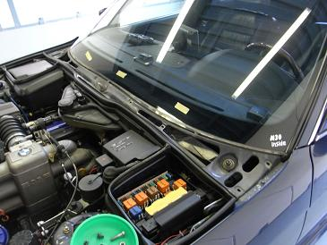
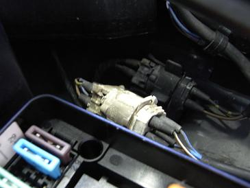
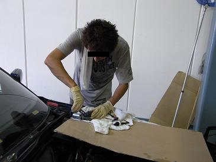
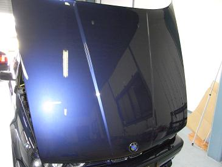
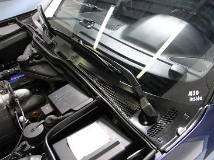
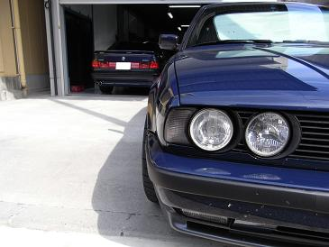

 某所と書きつつも・・・お分かりですね（笑 アルタァ邸でアルタァ号のメンテです。 今回のメンテは、ワイパープレッシャーコントロールの分解＆清掃＆グリスア〜ップ！ ゴゴゴー！とすごい音が出るようになってしまったんだとか。。
|
 この白いのがプレッシャーモーターのカプラーなわけですが・・・ 経年劣化で触ったところから崩壊していきます（汗 なので、、カプラーを外さずにモーターを引きずり出すことに。
|
 分解中・・・ 中からは20年物のグリスが出てきました。。
|
 毎回ピッカピカのアルタァ号
|
  いきなりですが、、グリスア〜ップして組み上げた図。 この後の試走では、モーターが動いているわずかな音が聞こえるぐらいになった。 無事に元の機能を取り戻してくれたようだ。 しかし、この帰りにＭゴロー号のエアコンのスイッチが入らず。。風がまったく出なくなってしまいました。オイオイ(-_-;) 窓全開 汗だくでの帰路でした。。 車も夏バテかぁ？！
|